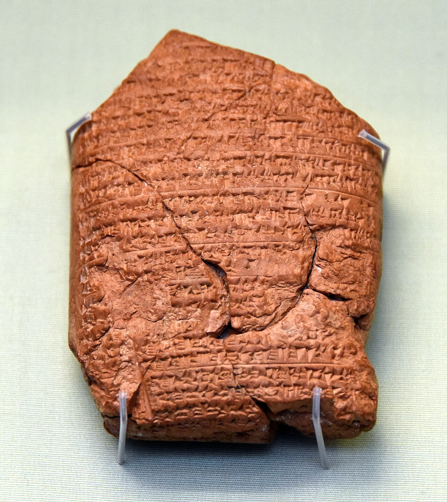
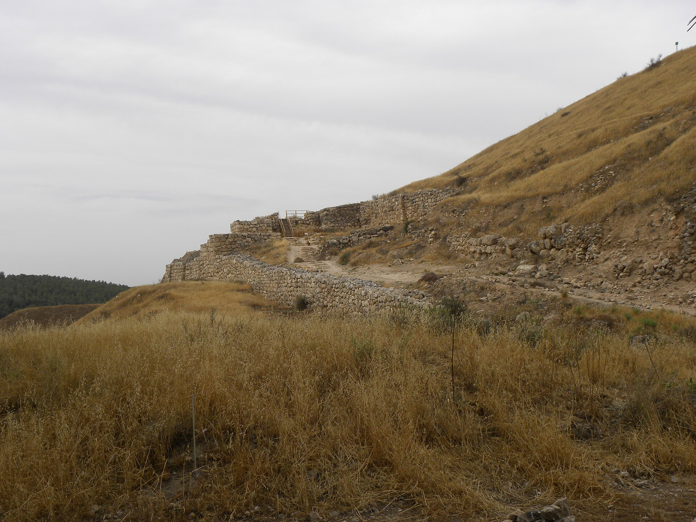
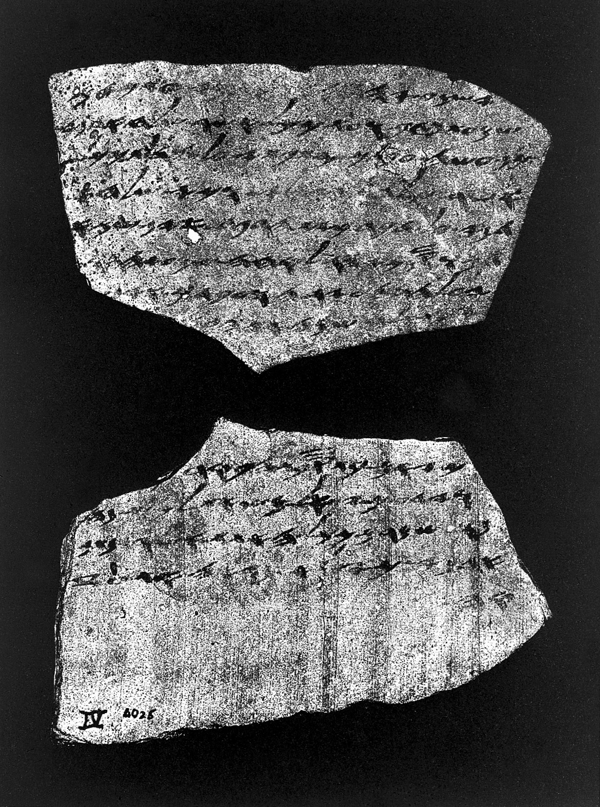

Del suceso mejor fechado de la historia bíblica al peor documentado hay once años y una tablilla rota.
Hay un año, en toda la historia del reino de Judá, del que conocemos el día. No el mes: el día. Y no está en la Biblia.
La Crónica Babilónica que los asiriólogos catalogan como ABC 5 —una tablilla de arcilla del British Museum que cubre los años 605 a 594 a.C.— anota, entre otras campañas de Nabucodonosor, esta: «En el séptimo año, en el mes de Kislimu, el rey de Akkad reunió sus tropas, marchó a la tierra de Hatti y sitió la ciudad de Judá, y el segundo día del mes de Addaru tomó la ciudad y capturó al rey.» El 2 de Adar del año séptimo de Nabucodonosor corresponde al 15 o 16 de marzo de 597 a.C.
Once años más tarde, Jerusalén fue destruida, el Templo incendiado y la dinastía davídica extinguida. De ese suceso —el más consecuente de toda la historia bíblica— no existe ni una línea de fuente babilónica. La tablilla que lo contaría se interrumpe tres años antes, y su continuación no se ha encontrado.
Esa asimetría es el asunto de esta entrega, y no es una curiosidad de archivo. Determina lo que se puede afirmar y con qué firmeza sobre cada paso del derrumbe.

Entre la muerte de Josías en Meguido y la última deportación registrada pasan veintitrés años. Cada acontecimiento de esa cadena está fechado con una precisión distinta, y la diferencia entre unos y otros es enorme: de un día exacto a una horquilla de dos años. Merece verse dibujado, porque lo que se dibuja aquí no son las fechas sino los márgenes.
La horquilla del año de la destrucción es el punto donde más gente se pierde, y la causa es sorprendentemente doméstica. La ambigüedad es interna a la Biblia. Jeremías 52:29 sitúa la deportación en el año dieciocho de Nabucodonosor; 2 Reyes 25:8 sitúa la caída de la ciudad en el año diecinueve. Un año de diferencia entre dos textos que cuentan lo mismo.
La explicación es de calendario. Judá contaba el año nuevo en Tishri, en otoño; Babilonia lo contaba en Nisán, en primavera. Según qué sistema use el redactor, y según si el año de acceso al trono se cuenta o no como primer año de reinado, el mismo suceso cae en un año o en el siguiente. A eso se añade que 586 fue la fecha estándar durante buena parte del siglo XX —Albright, Malamat, Thiele— y que 587 ha ganado terreno desde los años setenta.
De modo que escribir «587/586 a.C.» y explicar la barra no es indecisión: es la manera correcta de citar el dato. Lo que sí hay que rechazar sin ambigüedad es la fecha de 607, que circula en algunos círculos: contradice la cronología neobabilónica establecida por listas de reyes, tablillas astronómicas y miles de textos económicos fechados, y no tiene ningún apoyo académico.
Y en medio de ese silencio documental hay una excepción, y es hebrea. En enero y febrero de 1935, James Leslie Starkey encontró en Laquis dieciocho fragmentos de cerámica escritos con tinta; en 1938 aparecieron tres más. Estaban en el cuerpo de guardia de la torre oriental de la puerta exterior, entre los escombros del Nivel II.

No son literatura. Son correspondencia militar y administrativa, en su mayor parte de un oficial subalterno llamado Hoshayahu, destacado en un puesto avanzado, a su superior Ya'ush, en Laquis. Contienen informes, justificaciones y peticiones, con la mezcla exacta de burocracia y ansiedad que se reconoce en cualquier guerra. Y están escritas hacia 588 o 589 a.C., es decir inmediatamente antes de la caída.

El pasaje del ostracón número 4 se ha citado miles de veces: «…y que sepa mi señor que estamos vigilando las señales de fuego de Laquis, conforme a todos los signos que mi señor ha dado, porque no vemos Azeqá.» Con eso se demuestra que existía un sistema de comunicación por señales de fuego entre las plazas fuertes de Judá, y se obtiene una correlación notable con Jeremías 34:7, que menciona a Laquis y Azeqá como «las únicas ciudades fortificadas de Judá que quedaban».
La lectura habitual da un paso más y entiende que «no vemos Azeqá» significa que Azeqá ya había caído. Es una lectura dramática, muy eficaz, y no es segura: podría tratarse de visibilidad, de meteorología o de un puesto ya evacuado. Es uno de los lugares donde la divulgación exagera, y conviene no exagerarlo.
Lo que sí es incontestable es el valor del conjunto: los ostraca de Laquis son el testimonio hebreo contemporáneo más directo del colapso del reino de Judá. Otros de ellos mencionan a un profeta, lo que ilumina el ambiente en que se sitúa el libro de Jeremías; todos los nombres teofóricos que contienen son yahvistas; y su existencia misma prueba alfabetización funcional en la burocracia militar.
La arqueología de la destrucción es abundante y coherente: capas de incendio en Laquis, y en Jerusalén la Casa Quemada, la Casa de los Bullae, el Edificio 100 del aparcamiento Giv'ati cuyo carbono 14 lo sitúa en el 586. Bullae con nombres de funcionarios de la corte, excavadas en la Ciudad de David, que aparecen también en el libro de Jeremías.
Pero hay un detalle fino y contraintuitivo que merece detenerse. En Laquis, el Nivel III —el arrasado por Senaquerib en 701— muestra combate por todas partes: más de ochocientas cincuenta puntas de flecha incrustadas en el adobe caído, piedras perforadas al pie de los muros, escamas de armadura. En el Nivel II, el destruido por los babilonios, hay fuego, hay derrumbe, y no se encontró evidencia de daño de combate en las estructuras.
Es un dato pequeño que dice algo grande. Laquis no volvió a defenderse como en 701, porque no podía: el Nivel II nunca reconstruyó el sistema de doble muralla monumental del Nivel III. Ciento quince años después de haber resistido al ejército más eficaz del mundo, la segunda ciudad de Judá era una plaza que se quemaba sin pelear.
El derrumbe no fue un acto único. Fue una secuencia administrativa: 597, deportación de la corte y del rey; 587/586, destrucción y segunda deportación; 582, una tercera. Y después, una provincia babilónica con capital en Mizpá y un gobernador, Guedalías, cuya administración duró lo que duró.
Los números que da Jeremías 52 para esas tres oleadas son sobrios: tres mil veintitrés personas, ochocientas treinta y dos, setecientas cuarenta y cinco. Cuatro mil seiscientas en total. 2 Reyes da diez mil para la primera. Y 2 Crónicas, escrito siglos después, prescinde de las cifras y describe una tierra vacía durante setenta años.
Esas tres versiones no son tres errores. Son tres maneras de contar una catástrofe, escritas en tres momentos distintos y con tres propósitos distintos. Cuál de ellas se parece más a lo que muestran las prospecciones arqueológicas es la pregunta con la que se cierra esta serie.
La Crónica Babilónica ABC 5 es la tablilla BM 21946 del British Museum, conocida también como Crónica de Nabucodonosor; cubre los años 605 a 594 a.C. y se interrumpe en el año once del rey. Traducción y comentario en A. K. Grayson, Assyrian and Babylonian Chronicles.
Sobre la horquilla 587/586: la discrepancia entre Jeremías 52:29 y 2 Reyes 25:8, y su explicación por el cómputo de Tishri frente al de Nisán, en K. S. Freedy y D. B. Redford, JAOS 90 (1970), y en la bibliografía posterior recogida por O. Lipschits.
Los ostraca de Laquis fueron hallados por J. L. Starkey en las campañas de 1935 y 1938 y publicados por H. Torczyner (Tur-Sinai) en 1938; diecisiete piezas están en el British Museum. Sobre su contexto exacto en el cuerpo de guardia de la puerta exterior del Nivel II, D. Ussishkin, The Renewed Archaeological Excavations at Lachish, cap. 10. Sobre el radiocarbono del Edificio 100 y la destrucción del 586, Y. Regev et al., PNAS 121 (2024).